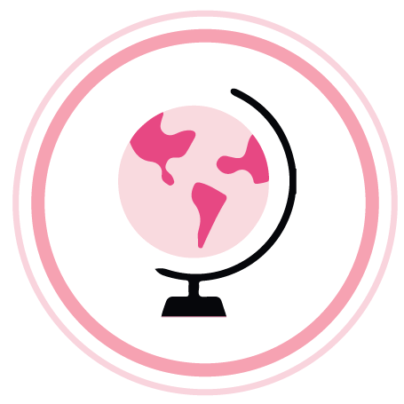
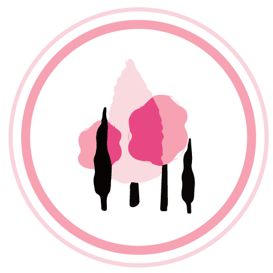

WORLDWIDE RECYCLING PROGRAM
Mary Kay is the first company in the world to develop a recycling program.
Mary Kay’s global manufacturing facilities recycle packaging, paper, plastic and other products through a recycling program every day.
WORLDWIDE RECYCLING PROGRAM
Mary Kay is the first company in the world to develop a recycling program.
Mary Kay’s global manufacturing facilities recycle packaging, paper, plastic and other products through a recycling program every day.
ZERO LANDFILL SITES
Mary Kay’s manufacturing facilities in the United States have achieved zero landfill status. A wastewater treatment station capable of treating 150 tons has been established in Asia-Pacific manufacturing facilities.
Implement the environmental goals of “waste water discharge” and “zero solid waste landfill”
SUSTAINABLE PRODUCT PACKAGING
Mary Kay offers innovative and environmentally friendly products and packaging and adopts reusable product designs including the reusable magnet design in Mary Kay’s makeup kit, so that any makeup products can be put inside at random combination to reduce waste arising from change100% BIO-DEGRADABLE PACKING MATERIALS
Biodegradable packing materials are materials that can degrade in the nature. The biodegradable packing materials made from renewable corn and potato starch made into packing fillers are used to ship Mary Kay’s product.
1 MILLION TREES PLANTED
Mary Kay has planted more than 1 million trees around the world in the activities organized by the global branches.